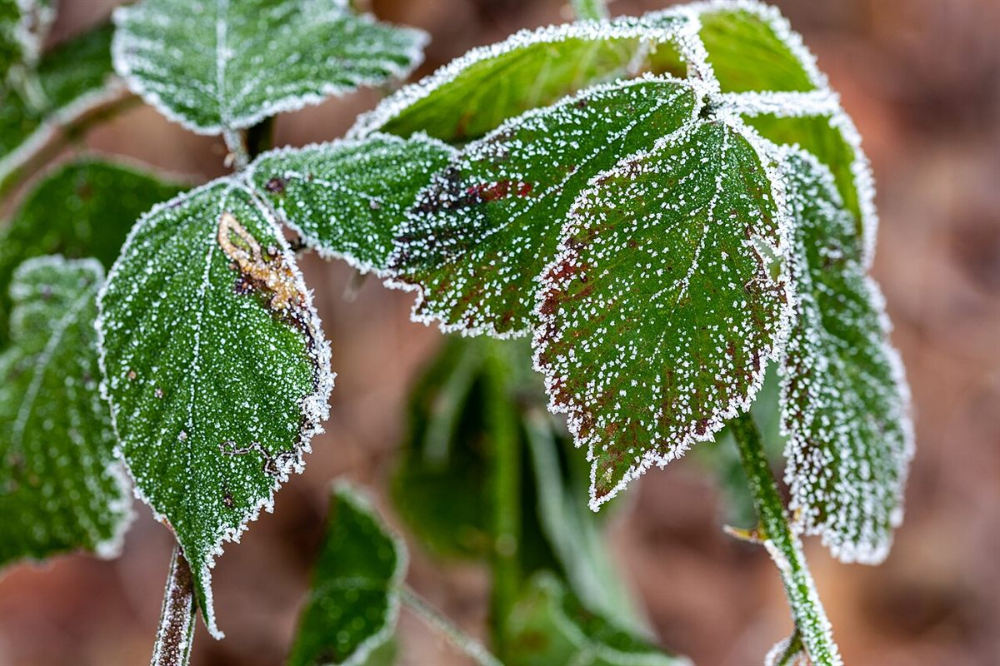
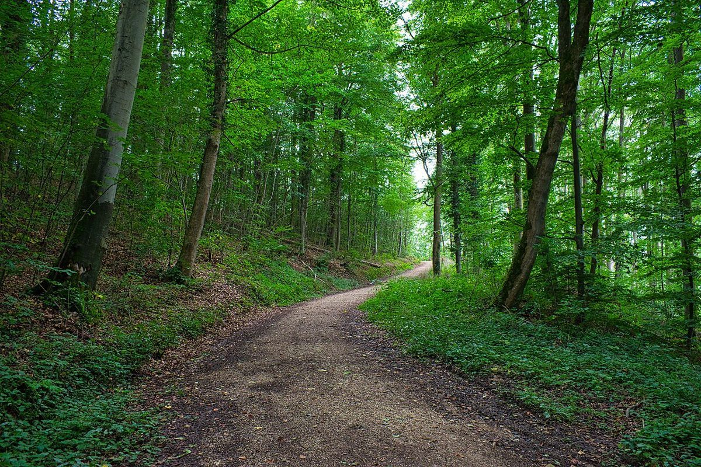
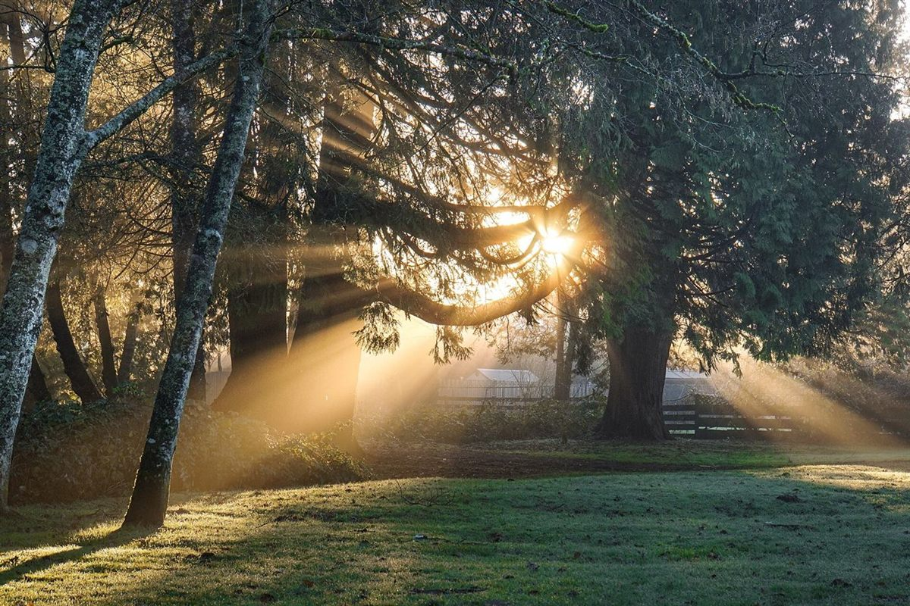

お店について
Ceres cafeは、群馬県伊勢崎市三室町にあるカフェです。
現在ご案内できるのは、下記の基本情報です。そのほかは準備中(お問い合わせください)です。

基本情報
- 屋号
- Ceres cafe
- 業種
- カフェ
- 所在地
- 群馬県伊勢崎市三室町4133-29
- Instagramを見る
- 営業時間
- 準備中(お問い合わせください)
- 定休日
- 準備中(お問い合わせください)
- 店名の由来
- 準備中(お問い合わせください)
- スタッフ紹介
- 準備中(お問い合わせください)
制作側の案
このサイトのコンセプト「ひと息の余白」
このページ全体は、「ひと息の余白」という考え方でつくっています。
お店の情報がまだ少ないあいだは、説明を重ねるよりも、住所・電話番号・Instagramに迷わず着けることを大切にし、広めの余白と大きな写真で静かに見せる、というものです。
これは制作側の案であり、お店の公式な考え方ではありません。お店の味・雰囲気・こだわりを表すものでもありません。


このページについて
このページは、Ceres cafeの営業用に制作した試作サイト(サンプル)です。
内容は仮のもので、お店の公式な情報ではありません。
掲載している写真はフリー素材のイメージで、店舗の実際の写真ではありません。
正式な情報は、お電話またはInstagramでご確認ください。